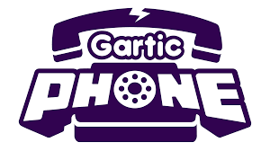

Gartic Phone
The rules and mechanics of Gartic Phone are simple. In fact, the rules are pretty much a combination of two party games: Pictionary (the drawing game) and Broken Telephone (that telephone game where the first player whispers something into the next person’s ear, and the next person has to pass on the original phrase until the whisper reaches the turn of the original speaker) — also known as Chinese Whispers. However, there’s a level of visual guidance that is available to help everyone follow the rules of the game.
In Gartic Phone, players will have to sketch a word/words and guess what those strange drawings represent. The game works by having the first player propose a sentence, and the second player will have to try their best to create a drawing of the first sentence. The next player will then need to guess what the sentence was. Following this, the subsequent player will follow the loop until the end where the players will have to compare the final sentence to the original starting sentence.